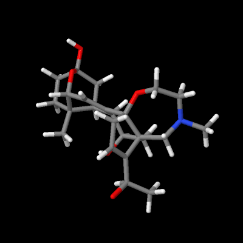

Debug
Home
AppScript
Gsheets
Teste
Gráfico
Tabela
1
2
3
4
5
6
Test

Tempo:
s
scrSize
!POST
timerStop
console
INÍCIO!
ENVIAR!
Salvar!
Console (wip)
Tabela de Orientações
Tempo 1
Parâmetro Final
Parâmetro 1
Parâmetro 2
Parâmetro 3
Parâmetro 4(ângulo)
Preencher Tabela (pressionar somente 1 vez no fim do teste)
Teste
Updated 20/02/2023